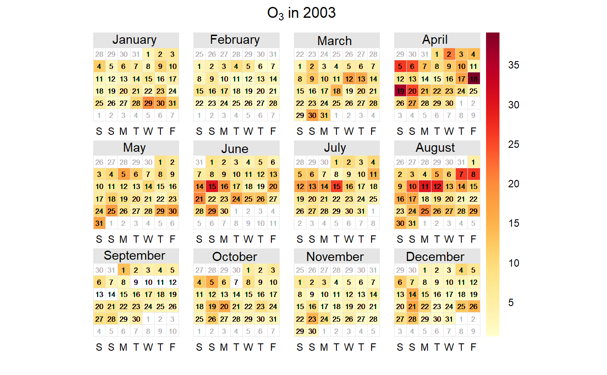
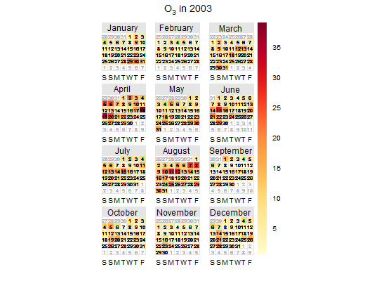

This function will plot data by month laid out in a conventional calendar format. The main purpose is to help rapidly visualise potentially complex data in a familiar way. Users can also choose to show daily mean wind vectors if wind speed and direction are available.
calendarPlot( mydata, pollutant = "nox", year = 2003, month = 1:12, type = "default", annotate = "date", statistic = "mean", cols = "heat", limits = c(0, 100), lim = NULL, col.lim = c("grey30", "black"), col.arrow = "black", font.lim = c(1, 2), cex.lim = c(0.6, 1), digits = 0, data.thresh = 0, labels = NA, breaks = NA, w.shift = 0, remove.empty = TRUE, main = NULL, key.header = "", key.footer = "", key.position = "right", key = TRUE, auto.text = TRUE, ... )
| mydata | A data frame minimally containing |
|---|---|
| pollutant | Mandatory. A pollutant name corresponding to a variable in
a data frame should be supplied e.g. |
| year | Year to plot e.g. |
| month | If only certain month are required. By default the function
will plot an entire year even if months are missing. To only plot certain
months use the |
| type | Not yet implemented. |
| annotate | This option controls what appears on each day of the calendar. Can be: “date” --- shows day of the month; “wd” --- shows vector-averaged wind direction, or “ws” --- shows vector-averaged wind direction scaled by wind speed. Finally it can be “value” which shows the daily mean value. |
| statistic | Statistic passed to |
| cols | Colours to be used for plotting. Options include
“default”, “increment”, “heat”, “jet” and
|
| limits | Use this option to manually set the colour scale limits. This
is useful in the case when there is a need for two or more plots and a
consistent scale is needed on each. Set the limits to cover the maximimum
range of the data for all plots of interest. For example, if one plot had
data covering 0--60 and another 0--100, then set |
| lim | A threshold value to help differentiate values above and below
|
| col.lim | For the annotation of concentration labels on each day. The
first sets the colour of the text below |
| col.arrow | The colour of the annotated wind direction / wind speed arrows. |
| font.lim | For the annotation of concentration labels on each day. The
first sets the font of the text below |
| cex.lim | For the annotation of concentration labels on each day. The
first sets the size of the text below |
| digits | The number of digits used to display concentration values when
|
| data.thresh | Data capture threshold passed to |
| labels | If a categorical scale is required then these labels will be
used. Note there is one less label than break. For example, |
| breaks | If a categorical scale is required then these breaks will be
used. For example, |
| w.shift | Controls the order of the days of the week. By default the
plot shows Saturday first ( |
| remove.empty | Should months with no data present be removed? Default
is |
| main | The plot title; default is pollutant and year. |
| key.header | Adds additional text/labels to the scale key. For example,
passing |
| key.footer | see |
| key.position | Location where the scale key is to plotted. Allowed
arguments currently include |
| key | Fine control of the scale key via |
| auto.text | Either |
| ... | Other graphical parameters are passed onto the |
As well as generating the plot itself, calendarPlot also
returns an object of class ``openair''. The object includes three main
components: call, the command used to generate the plot;
data, the data frame of summarised information used to make the
plot; and plot, the plot itself. If retained, e.g. using
output <- calendarPlot(mydata, "nox"), this output can be used to
recover the data, reproduce or rework the original plot or undertake
further analysis.
An openair output can be manipulated using a number of generic operations,
including print, plot and summary.
calendarPlot will plot data in a conventional calendar format i.e. by
month and day of the week. Daily statistics are calculated using
timeAverage, which by default will calculate the daily mean
concentration.
If wind direction is available it is then possible to plot the wind
direction vector on each day. This is very useful for getting a feel for the
meteorological conditions that affect pollutant concentrations. Note that if
hourly or higher time resolution are supplied, then calendarPlot will
calculate daily averages using timeAverage, which ensures that
wind directions are vector-averaged.
If wind speed is also available, then setting the option annotate =
"ws" will plot the wind vectors whose length is scaled to the wind speed.
Thus information on the daily mean wind speed and direction are available.
It is also possible to plot categorical scales. This is useful where, for
example, an air quality index defines concentrations as bands e.g.
“good”, “poor”. In these cases users must supply labels
and corresponding breaks.
Note that is is possible to pre-calculate concentrations in some way before
passing the data to calendarPlot. For example
rollingMean could be used to calculate rolling 8-hour mean
concentrations. The data can then be passed to calendarPlot and
statistic = "max" chosen, which will plot maximum daily 8-hour mean
concentrations.
David Carslaw
# load example data from package data(mydata) # basic plot calendarPlot(mydata, pollutant = "o3", year = 2003)  # show wind vectors calendarPlot(mydata, pollutant = "o3", year = 2003, annotate = "wd")  if (FALSE) { # show wind vectors scaled by wind speed and different colours calendarPlot(mydata, pollutant = "o3", year = 2003, annotate = "ws", cols = "heat") # show only specific months with selectByDate calendarPlot(selectByDate(mydata, month = c(3,6,10), year = 2003), pollutant = "o3", year = 2003, annotate = "ws", cols = "heat") # categorical scale example calendarPlot(mydata, pollutant = "no2", breaks = c(0, 50, 100, 150, 1000), labels = c("Very low", "Low", "High", "Very High"), cols = c("lightblue", "green", "yellow", "red"), statistic = "max") }